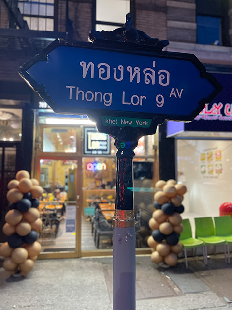
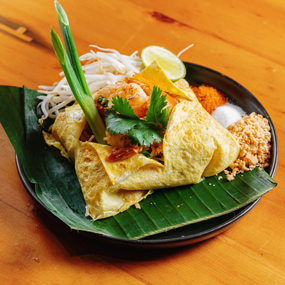
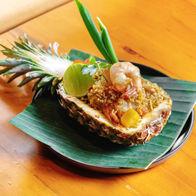
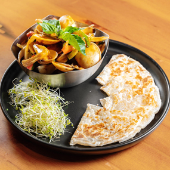
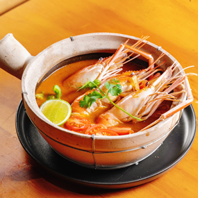
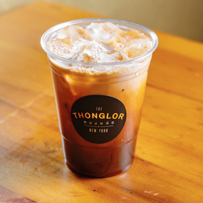
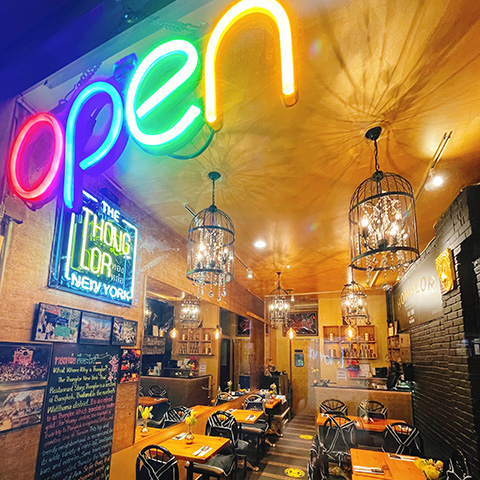

Thai Quality & Night Life
Our Story: ทองหล่อคืออะไร?
Thonglor: What, Where, And Why?
Thonglor is a section of Bangkok, Thailand in the northern Watthana district. It’s also referred to as Thong Lor which translates to molten gold. For many visitors, the highlight of their trip to Bangkok is exploring, dining, and spending time in Thonglor. This hip and trendy neighborhood is recognized for its wide variety of night-life, boutiques, bars, and eateries. Some travel experts have even called Thonglor the “hippest district” in all of Asia. For those who are into great food, shopping, people watching, and the arts, Thonglor is the perfect place to visit while in Bangkok, Thailand.
When we lived in Thailand, we would often visit Thonglor to enjoy the many eateries, the arts, nightlife, and bars. We wanted to bring that same feel, ambiance and taste from Thailand to New York and San Francisco.
Our dream has been to own a Thai restaurant in the US. Just 2 years later, our dream came to fruition as we opened The Thonglor New York in Manhattan, New York City in 2021. It's truly the American Dream!

Serving Authentic Thai Variety
At The Thonglor New York, you will experience the liveliness and excitement of our exhibition kitchen while eating the best Thai food. Our extraordinary, fast, and friendly staff wishes to make your next visit an unforgettable event. Popular dishes from Thonglor, Bangkok, Thailand, are on our menu. These include the ever-popular Pad Thai, Tom Yum Soup, Green Curry, Thai Fried Rice, Papaya Salad, Silver Noodle Salad, and along with various cocktails and beverages such as Thai Iced Tea and Thai Iced Coffee. Here are a few selections of what we serve:

Chiang Mai Noodle (Khao Soi)
- 
Pad Thai Noodle Shrimp with Egg Wrap
- 
Pineapple Fried Rice

Pan Seared Salmon Green Curry
Crispy Soft Shell Crab with Thai Curry Sauce
- 
Thai Spicy Clams
- 
Tom Yum Soup
- 
Thai Iced Tea

This New York eatery, located in 9th Ave, is popular with diners before and after watching a play or show on Broadway and Travel in Time Square. Get a taste of Thailand today, and visit The Thonglor New York, located at 789 9th Ave at Hell's Kitchen District.
9th Ave is where you get your fill of the arts and delicious Thai food just like in Thonglor, Bangkok. We also offer Vegan dishes for those who prefer healthy options.
Find Us
Subway Transit: Take the 1 2 A C or E and arrive at 50 Street Station. Walk a few blocks and you'll arrive at the Thonglor New York!
Get more directions